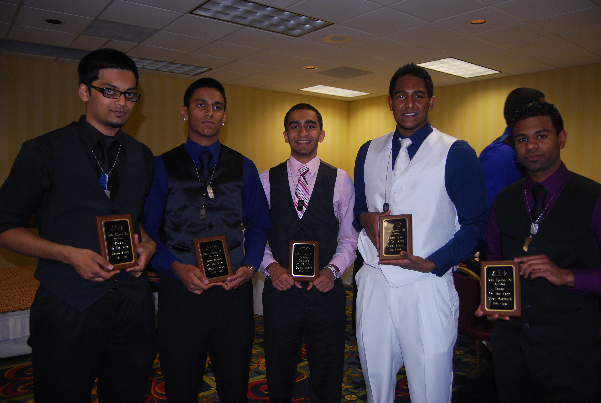
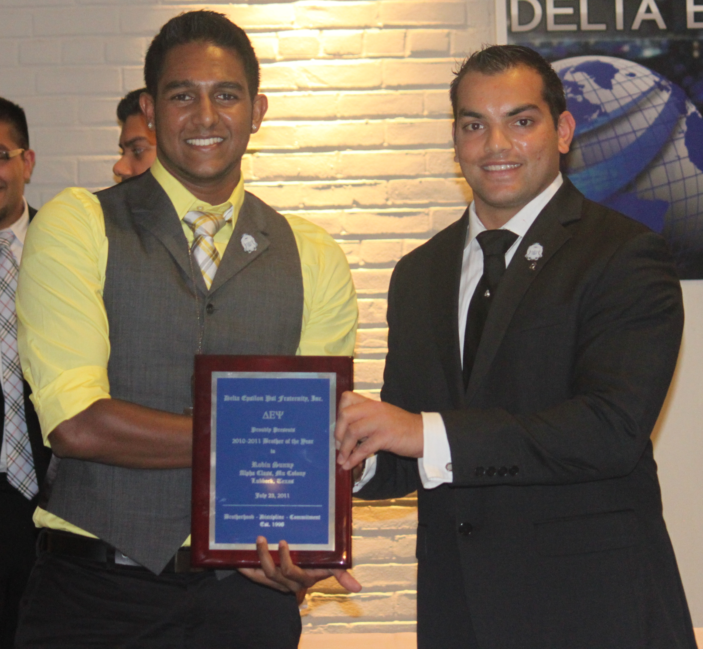
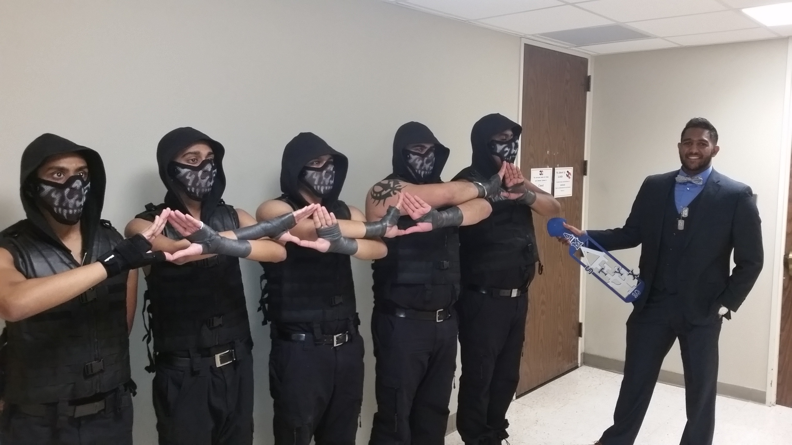
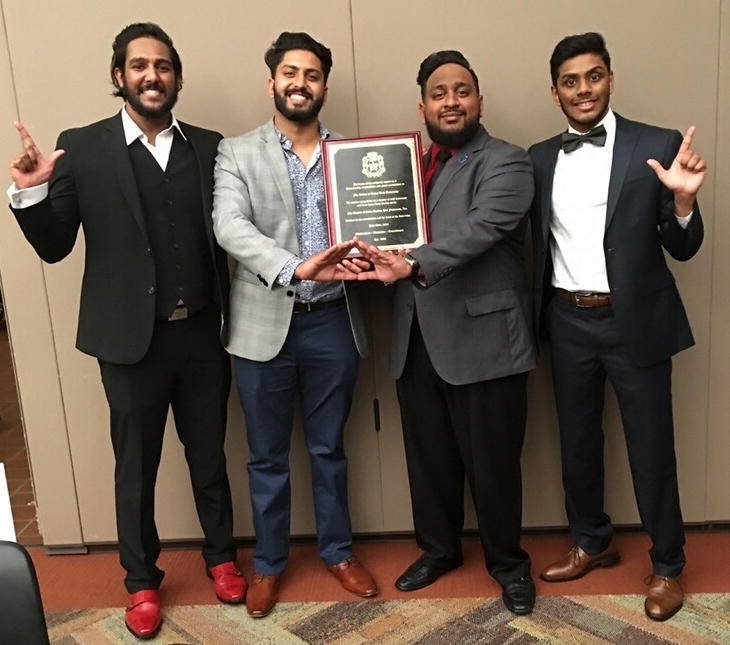
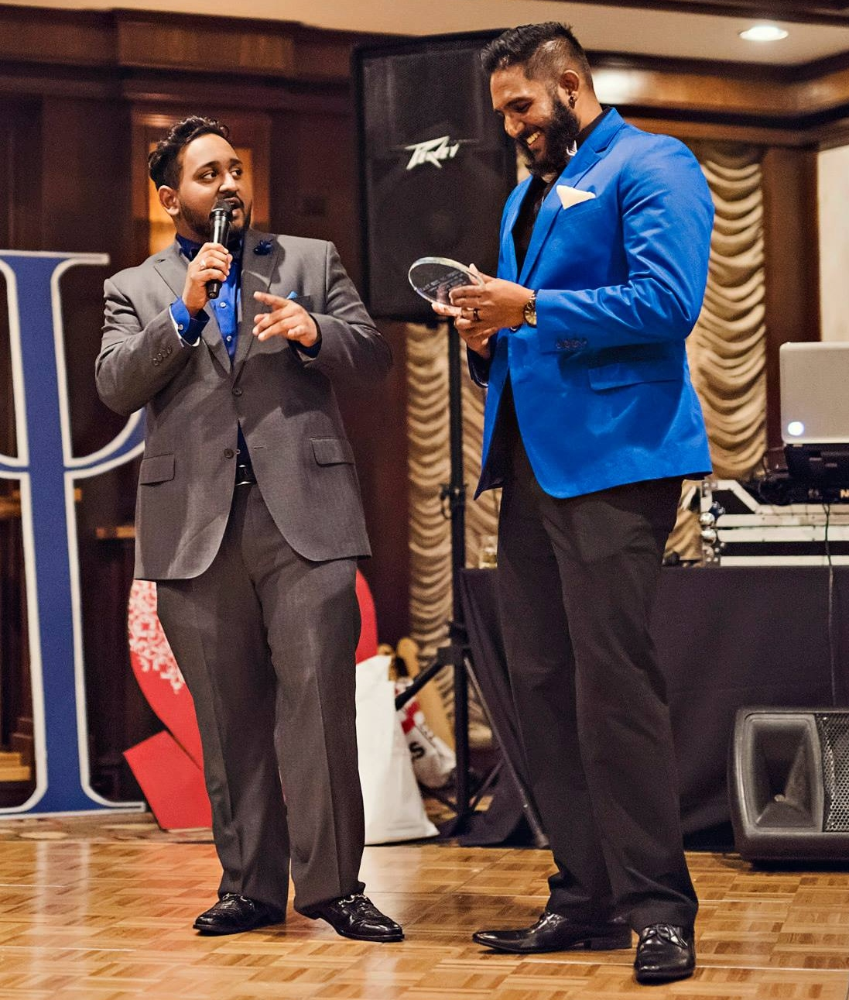
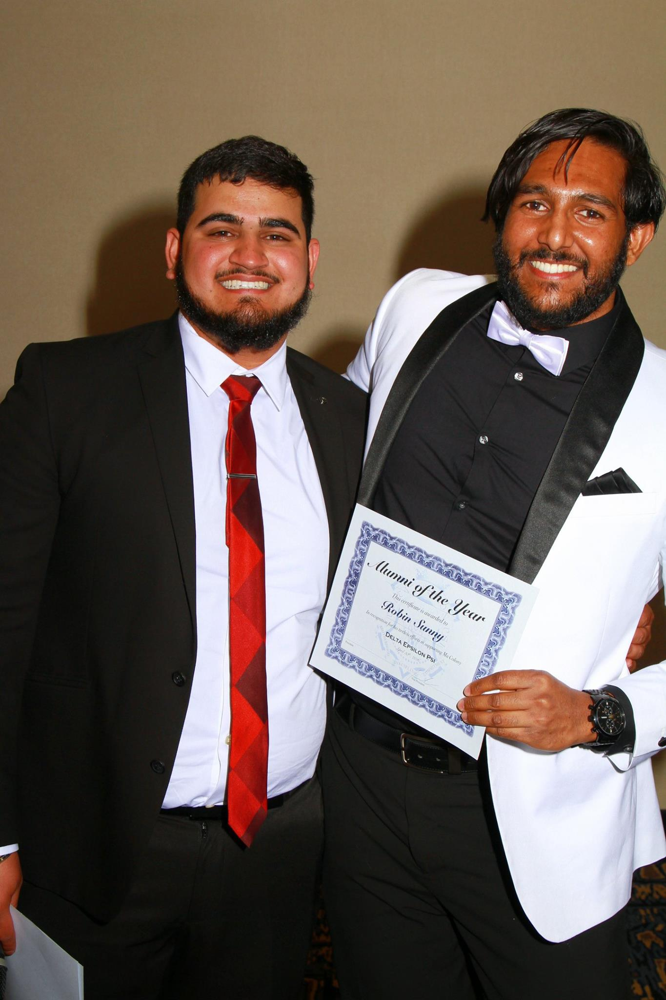
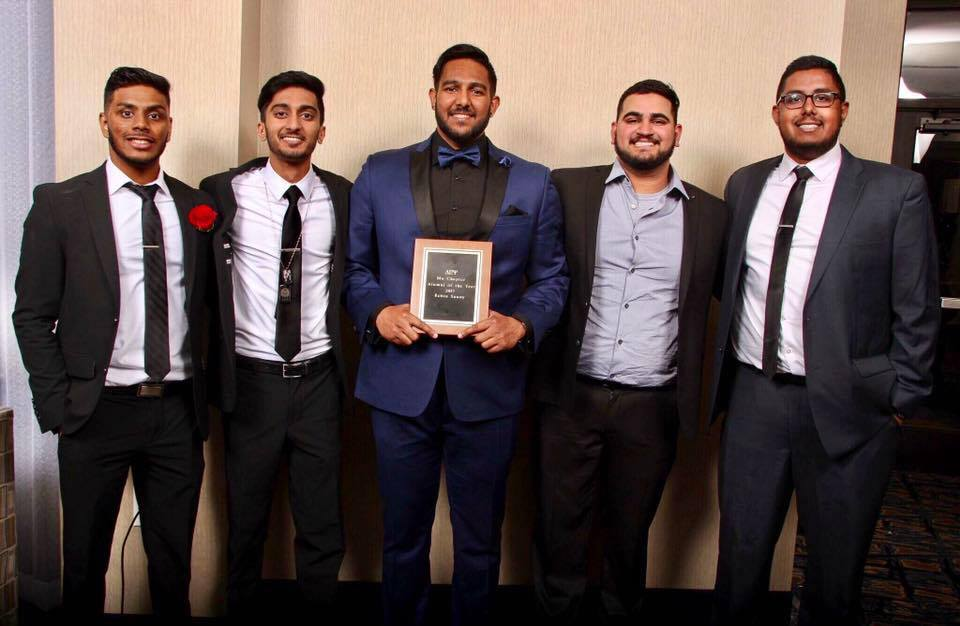
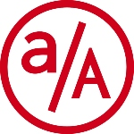

Howdy! My name is Robin Sunny.
I joined Delta Epsilon Psi in the Fall of 2008 as a member of the Alpha Class of Mu Chapter.
I am interested in joining the National Council as the National Director of Alumni Affairs.
During my tenure as an active member of Mu Chapter, I held several positions of leadership for the chapter (Social Chair, Historian, Chapter President) as well as for Multicultural Greek Council (Social Chair, Vice President of Fraternities, Council President).
Under my leadership, several new events were established at Mu Chapter and at Texas Tech University.
I have always pushed for everyone to attempt bigger and better things.
Even if those attempts failed, I pushed for everyone to learn from the experience and try again.
After my year as chapter president, I joined the National Council of Delta Epsilon Psi.
I served as the National Director of Records and the National Vice President of Membership.
While in these roles, I gained insight into how the mission of Delta Epsilon Psi was enacted on from a national point-of-view
and gained experience working with multiple chapters, executive councils, and individual members.
After my time on National Council, I took a year for myself to figure out who I was and who I wanted to be.
I came back to Mu Chapter as an active in graduate school with a renewed sense of self.
I knew who I was and what my principles were and how to integrate my principles with the mission of Delta Epsilon Psi.
I took on more leadership positions (Safety Chair, Intake Coordinator, Historian) with a different set of experiences under my belt.
I was able to be an older statesman and learned I did not need to be in a leadership position to be a leader; rather, I excel at leading by example.
After graduating for the second time, I remained as active as I could as an alumnus.
I supported the chapter's social and service endeavors where possible.
I came back to speak with the intake classes on what being an active really entails.
I educated actives on how to prepare for a life after college.
Though I live in Seattle now, I always organize events for Mu Chapter alumni whenever I visit Dallas or Houston.
One advantage I have is that I spent 8 years at Texas Tech University. This allowed me the unique experience of knowing 8 years of intake classes for Mu Chapter.
I have been able to connect members of our chapter who would otherwise only know each other's name.
I find satisfaction in helping the members of our chapter have a better experience than I did and to pay it forward to the next class.
I strive to display the level of brotherhood, discipline, and commitment that I think we are all capable of.
To this day, I still try to be the big brother that I did not always have.
Leadership Roles
Undergraduate Years
Mu Chapter
Historian, 2009–11
Social Chair, 2009-11
Mu Chapter President, 2010–11
Multicultural Greek Council
Historian, 2010–12
Social Chair, 2010–12
Vice President of Fraternities, 2011
Council President, 2012
Delta Epsilon Psi National Council
National Director of Records, 2011-12
National Vice President of Membership, 2012-13
Graduate Years
Intake Coordinator, 2014-15
Safety Chair, 2014-15
Historian, 2014-15
Alumnus Years
Alumni Advisor, 2015-18
Awards and Accomplishments

Mu Chapter Commitment of the Year
2011

National Brother of the Year
2011

Theta Class Probate
2015

Mu Chapter, Chapter Status
2015

Mu Chapter Alumnus of the Year
2015

Mu Chapter Alumnus of the Year
2016

Mu Chapter Alumnus of the Year
2017
Professional Experience
Software Engineer
Microsoft Xbox
Feb 2022 - Present
Microsoft Xbox
Feb 2022 - Present
Software Engineer
Square / Block
Sep 2021 - Feb 2022
Square / Block
Sep 2021 - Feb 2022
Software Engineer
AdLiven
Jun 2019 - Sep 2021
AdLiven
Jun 2019 - Sep 2021
Software Engineer Intern
Lob
Jan 2019 - Apr 2019
Lob
Jan 2019 - Apr 2019
Academic Background
BS Mechanical Engineering
Texas Tech University
2012
Texas Tech University
2012
MS Bioengineering
Texas Tech University
2015
Texas Tech University
2015
MS Kinesiology (Biomechanics)
Texas Tech University
2015
Texas Tech University
2015

Web Development
App Academy
2018
App Academy
2018